|
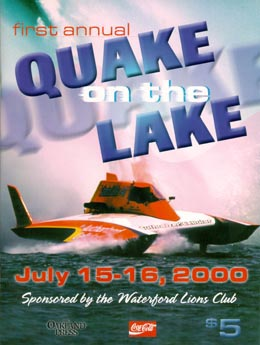 |
For all of you that haven't had enough of steroid powered hydros
blasting walls of water into the perfect blue summer sky after
the Gold Cup, we have just the thing for you, Quake on
the Lake!
Quake replaces the event previously held at Sylvan Lake. Boat classes range from stock 1.5 Litres all the way up to modified 5 Litres. There will be about a dozen heats each day, including a Governor's Cup Race. Admission is just $10 dollars per vehicle, so bring your friends! Gates open at 8am, and the pits are open to the public until 11am. Racing is 12:00 to about 5:30. The Pontiac Lake Recreation Area is located on Gale Road, approximately one mile North of M-59 and N. Williams Lake Road. |
|
|
|
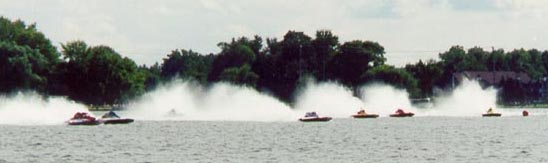 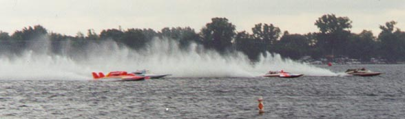 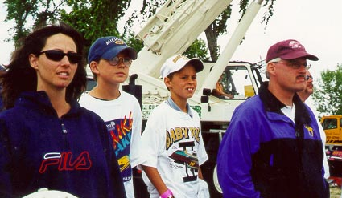 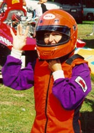 Mark Tate and family watch the racing, while Beth Gilday suits up for a ride in TAZ. |
|
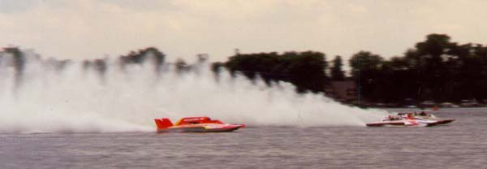 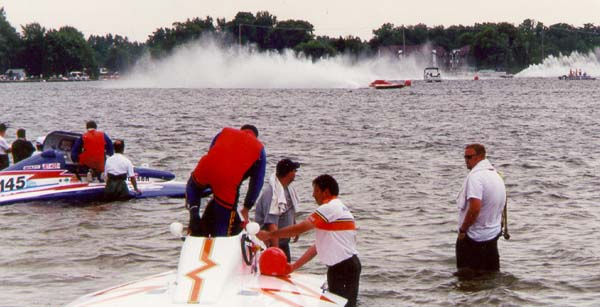 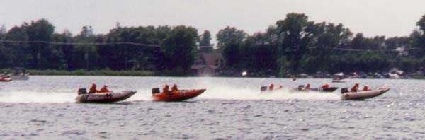 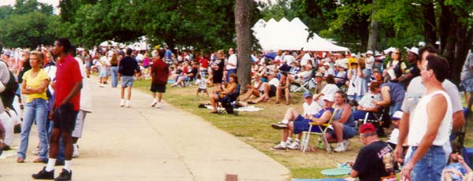 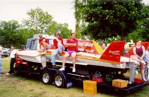 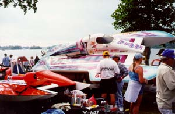 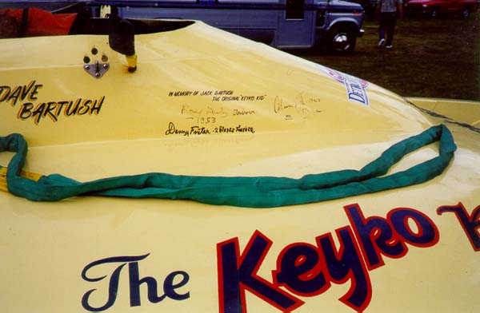 The KEYKO KID III cockpit with autographs by Roy Duby and Danny Foster. 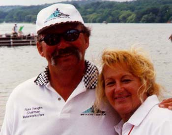 Race fans Russ Vaughn and Carol Maas |
|
Unlimiteds Detroit - Quake On The Lake |
|
Title image [race program cover] by Eddie Delbridge and Dale Hampshire.
All contents Copyright 2000 Brian Reed, except where noted. All Rights Reserved.
|